Ferramentas do Projeto
1. Introdução
Nesta página, você encontrará uma lista completa das ferramentas que serão utilizadas durante o processo de elicitação de requisitos do aplicativo Letterboxd. Cada ferramenta possui um propósito específico, abrangendo desde a coleta de informações até o gerenciamento de tarefas e comunicação entre a equipe. Essas ferramentas são essenciais para garantir que todas as etapas do projeto sejam realizadas de forma adequada e dentro do prazo estabelecido.
2. Ferramentas
A Tabela 1 apresenta informações sobre as ferramentas que serão utilizadas durante o projeto, juntamente com uma breve descrição de seus objetivos.
| Logo | Ferramenta | Finalidade |
|---|---|---|
| GitHub¹ | O GitHub é uma plataforma de hospedagem de código-fonte de programação e será utilizada como repositório para armazenar a documentação do projeto. | |
| Telegram² | Aplicativo utilizado para manter uma rápida comunicação entre a equipe. | |
| Teams³ | Plataforma utilizada para conduzir e gravar as reuniões e entregas da equipe. | |
| Canva⁴ | Utilizado para criar o Rich Picture do aplicativo Letterboxd. | |
| Letterboxd⁵ | Aplicativo escolhido como objeto de estudo para realizar o projeto. | |
| Youtube⁶ | Ferramenta utilizada para armazenar os vídeos das reuniões e apresentações. | |
| Visual Studio Code⁷ | Editor de texto usado para editar e fazer upload da documentação no GitHub. | |
| Mkdocs⁸ | Utilizado para gerar a documentação no Github Pages | |
|  | Google Drive⁹ | Plataforma de armazenamento na nuvem utilizada pela equipe para armazenar arquivos do projeto. |
| Google Docs¹¹ | Utilizado para criar e armazenar as Atas das reuniões. | |
| Google Forms¹² | Plataforma utilizada para criar formulários para coletar informações para o projeto. | |
| This Person Does Not Exist¹³ | Site que gera imagens de pessoas fictícias, será utilizado pela equipe para a criação das personas. |
Tabela 1: Ferramentas utilizadas no projeto. Fonte: Autoria Própria
3. Referências
- [1] GITHUB. Build software better, together. Disponível em: https://github.com. Acesso em: 16 abr. 2023.
- [2] Telegram – a new era of messaging. Disponível em: https://telegram.org. Acesso em: 16 abr. 2023.
- [3] Aplicativo de Chat Interno e Trabalho Remoto | Microsoft Teams. Disponível em: https://www.microsoft.com/pt-br/microsoft-teams/group-chat-software. Acesso em: 16 abr. 2023.
- [4] CANVA. Canva. Disponível em: https://www.canva.com/. Acesso em: 16 abr. 2023.
- [5] Letterboxd • Your life in film. Disponível em: https://letterboxd.com. Acesso em: 16 abr. 2023.
- [6] YOUTUBE. YouTube. YouTube, 2022. Disponível em: https://www.youtube.com Acesso em: 16 abr. 2023.
- [7] MICROSOFT. Visual Studio Code. Disponível em: https://code.visualstudio.com. Acesso em: 16 abr. 2023.
- [8] MkDocs. Disponível em: https://www.mkdocs.org. Acesso em: 16 abr. 2023.
- [9] Meet Google Drive – One place for all your files. Disponível em: https://drive.google.com/drive/. Acesso em: 16 abr. 2023.
- [11] Google Docs. Disponível em: https://docs.google.com/. Acesso em: 22 abr. 2023.
- [12] Google Forms. Disponível em: https://docs.google.com/forms/. Acesso em: 22 abr. 2023.
- [13] This Person Does Not Exist. Disponível em: https://thispersondoesnotexist.com/. Acesso em: 22 abr. 2023. Refererenciado do grupo Fifa Plus da disciplina de Requisitos de Software. Disponível em: https://requisitos-de-software.github.io/2022.2-FifaPlus/Planejamento/ferramentas/
- O que é GitHub? Disponível em: https://tecnoblog.net/responde/o-que-e-github/. Acesso em: 16 abr. 2023.
@ELRUMO. Over 5000+ free icons for macOS Monterey, Big Sur & iOS - massive app icon pack. Disponível em: https://macosicons.com/#/. Acesso em: 16 abr. 2023.
O que é GitHub? Disponível em: https://tecnoblog.net/responde/o-que-e-github/. Acesso em: 16 abr. 2023.
- @ELRUMO. Over 5000+ free icons for macOS Monterey, Big Sur & iOS - massive app icon pack. Disponível em: https://macosicons.com/#/. Acesso em: 16 abr. 2023.
4. Histórico de Versão
| Data | Versão | Descrição | Autor | Revisor |
|---|---|---|---|---|
| 13/04/2023 | 1.0 |
Criação da primeira versão do documento, incluindo as primeiras ferramentas utilizadas, logotipo e sua função. | Maciel Júnior | Rhuan Marques |
| 13/04/2023 | 2.0 |
Alteração dos logos, adição da bibliografia, adição da ferramenta google drive. | Maciel Júnior | Natan Santana |
| 22/04/2023 | 3.0 |
Adição das ferramentas Google Docs, Google Forms e This Person Does Not Exist | Maciel Júnior | Arthur Loureiro |